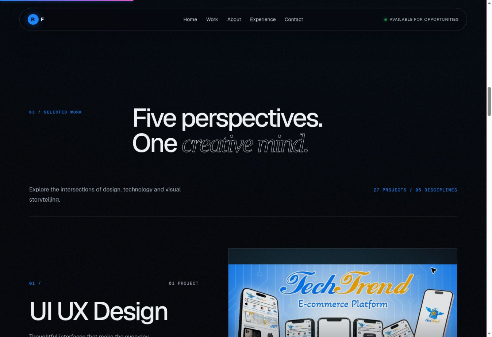
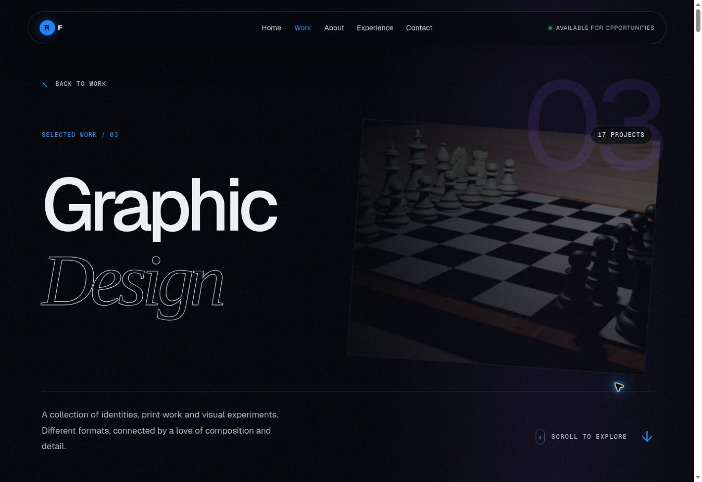

Electric blue portfolio update
Five perspectives.
One creative mind.
This capture previews the new homepage category gateway and the editorial category experience. The live app adds GSAP and ScrollTrigger reveals, Three.js atmosphere, responsive layouts, project galleries and reduced motion support.
Homepage Work gateway

Graphic Design category

Category routes
/work/ui-ux-design· 1 project/work/software-development· 1 project/work/graphic-design· 17 projects/work/videography· 7 projects/work/photography· 1 project